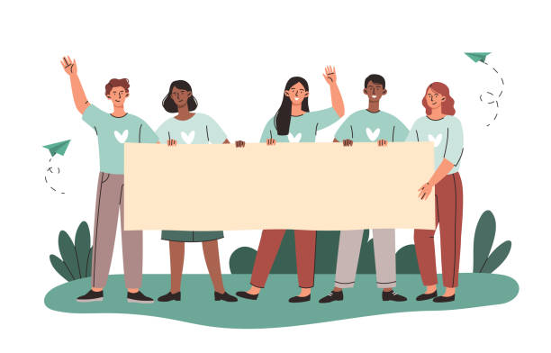

Impact of community service on personal growth

Posted on August 30, 2024
Humans are born to live and work together; they thrive most successfully when inundating themselves with others. Segregation and ostracism from society can lead to detrimental effects on both mental and physical health, such as depression, anxiety, loneliness, and more. It’s imperative to involve oneself in community service work, such as volunteering, as positive interactions can stimulate dopamine release, which causes pleasure and builds a strong cognitive mind. Regardless, in our society, we often prioritize those who are exuberant, zestful, and extroverted because they can form genial and abiding relationships. However, all human beings are not the same in psychology and behaviour. Some love spending time in isolation, while others prefer the public sphere. I simply disapprove of the stereotype that introverts cannot work in public places. It’s not introversion that holds them back; rather, it is society that perpetuates this prevalent notion.
I was born an introvert, initially staying away from friends and disliking community chores. Even when I attempted them, no one ever emboldened me. It was literally a challenge to get out of my comfort zone, especially amid the constant nagging from society. We need to acknowledge that every person has their own attributes and abilities; being an introvert doesn’t necessarily make someone inept at communication.
Deciding to engage in community service was, at first, an arduous pursuit. It was one of my best friends who urged me to join the Red Crescent Society as a volunteer, and though I was reluctant, I eventually consented. When I started working on packaging relief items and distributing them to those affected by disasters, I noticed a healthy boost to my self-confidence, self-esteem, and life satisfaction. I felt a sense of fruition and purpose. Most importantly, I was successful in forming abiding friendships that made my life meaningful. I remember the time I helped distribute food to impoverished people affected by a cyclone. Their joy made my blood rich in dopamine, the pleasure hormone, which piqued my enthusiasm for working with people.
Apart from mental and physical development, I learned a myriad of skills, from communication to problem-solving. I had to make headcounts of the houses we delivered items to, and our team had the incumbent task of fundraising from the public, especially during floods. Additionally, I was an English teacher at an underprivileged school where I tutored and supervised children, made lesson plans, took exams, and checked their progress—all without remuneration.
Volunteering and community work can significantly boost one’s mind, improving critical thinking abilities. It helps mitigate negative thoughts, predominantly depression. I feel doleful that society makes judgments based on personality traits; therefore, I aim to debunk the idea that introversion is a weakness. Every human being is unique, and that uniqueness should be celebrated.